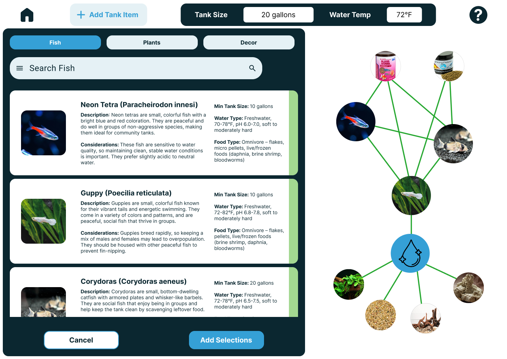
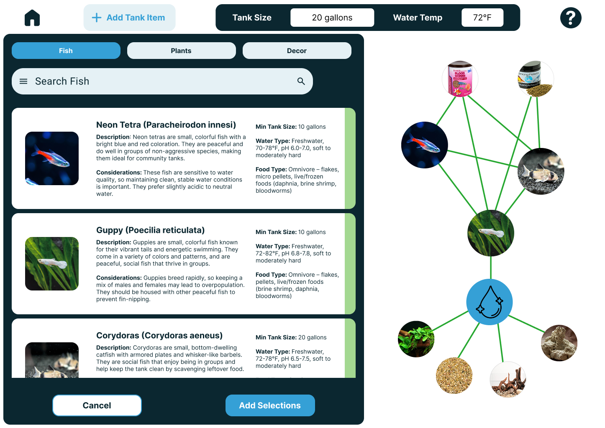

Ethan Cheng
Role - UI Designer | Researcher | Wireframing
Collaborators - Nancy Liu | Pedro Serdio | Katherine Van Kirk
TankTinker was a design in response to a direct competitor in online aquarium planning tools, MyAquariumBuilder. A major pain point of using MyAquariumBuilder was that when adding compontents such as livestock (fish, etc.), vegetation, and substrate; selecting a component led to its page detailing recommmended conditions and compatibility. Due to having to cross reference each of the pages, as the amount of components added increased, insuring cross-compatibility sharply became more difficult to manage.